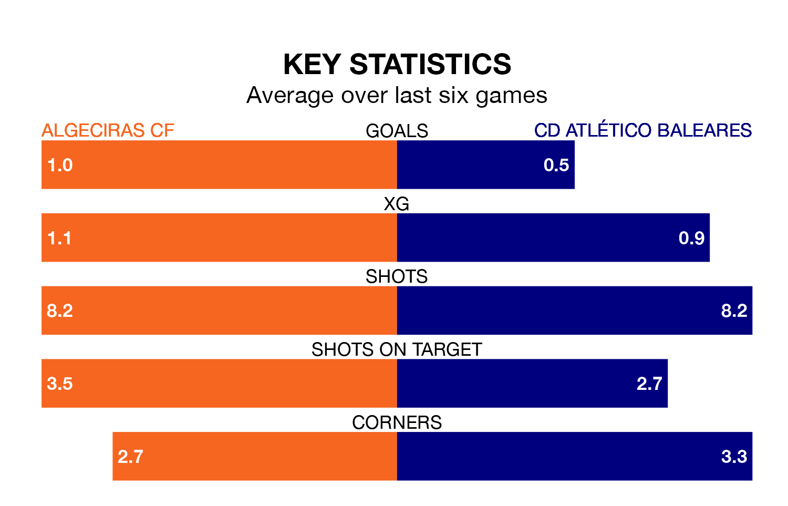

Algeciras CF welcome CD Atlético Baleares to the Estadio Nuevo Mirador on early Sunday looking to pick up points to end their five-game losing streak.
Algeciras's struggles have left them with just one point from their last six Primera Division RFEF Group 2 matches, while their opponents have earned two from a possible 18.
Atlético Baleares are 19th in the table after 34 games, of which they have won five and drawn eight, earning 23 points.
Algeciras are six places ahead of the away team in 13th, with 10 wins and 12 draws putting them on 42 points.
With 18 goals in 34 games so far this season, Atlético Baleares are the league's lowest scorers with 0.5 goals per game. And they are conceding more than average, letting in 54 goals at a rate of 1.6 per game.
The hosts, meanwhile, are average scorers, with 1.1 goals per game. They have also conceded 1.1 goals per game.
In David Rodríguez Sánchez, Atlético Baleares have one of the league's most on-form strikers so far this season. He has notched seven goals in 18 appearances, to sit sixth in the scoring charts.
Algeciras's top scorers, with three goals each, are Javier Cueto Suárez, Iván Turrillo Caballero, Ezequiel Díaz Romero, Diego Esteban Pérez and Eric Montes Arce.
In the last three years, Algeciras and Atlético Baleares have played each other on three occasions. Atlético Baleares won one of them and they drew the other.
Their last meeting was on August 27, when they played out a 1-1 draw.
Algeciras's last match was on Sunday, a 3-1 loss against Atlético Madrid B, with Juan Rodríguez Martínez getting the goal for Algeciras.
Atlético Baleares lost 2-1 against Intercity last time out, also on April 28, with Nuha Marong Krubally on the scoresheet.
Updated: 10:44 (UTC), 30/04/24